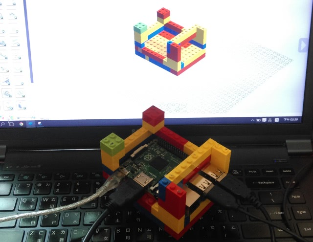
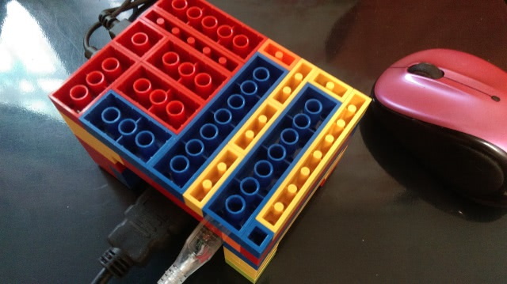
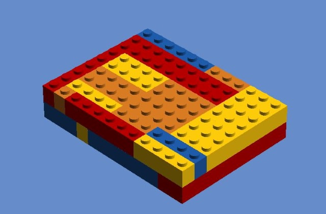
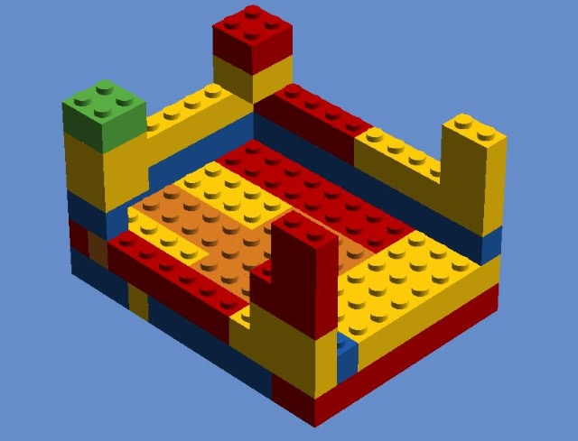
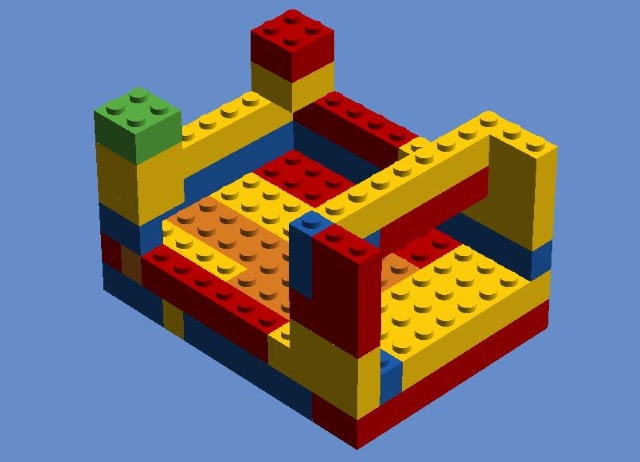

本來一直想幫 Raspberry PI 2 買個外殼，那天看到桌上放了幾個 LEGO，想說不如試著用積木做做看，本來還偷了一條 EV3 的積木來用，後來小改了一下，現在全部用 LEGO 基本的方塊積木就可以了：

外殼沒有全部覆蓋有兩個目的，一是方便 GPIO 等的銜接，二是可以散熱（RPI 2 有這個需求嗎？），使用時要倒過來，這樣就可以兼具防落塵的效果：

做這個也沒什麼，自己有 LEGO 的話，都可以自己試試組起來，不過如果你懶得自己想怎麼組的話，可以按一下底下的圖，線上參考我的組裝方式：
積木用色與大小，完全是照我手邊的積木使用 Lego Digital Designer 記錄下來的，你可以完全按照自己手邊的積木來變化，只要彼此銜接的穩固就可以了，基本上，積木佔的總面積以顆粒來算的話是 9 X 12：

扣除外圍的話，Raspberry PI 2 佔的面積以顆粒來算的話是 7 X 11：

組裝到上圖之後，就可以放上 Raspberry PI 2 的板子，然後放上最後橫跨在 USB 埠上的積木：

這個橫跨在 USB 埠上的積木，會固定住板子，這樣倒過來，板子就不會搖晃囉！手邊剛好有 LEGO 的，不妨試試看吧！